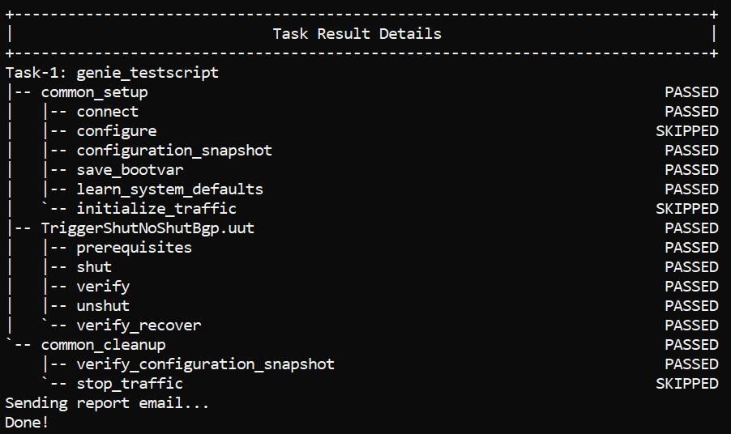

Write a trigger
This topic describes how to write your own triggers when you want to extend the pyATS Library functionality to meet your network automation requirements.
Note
The Get Started with pyATS guide, Run a test case section explains the concepts that you need to know before you begin to write a trigger.
Triggers, verifications, and test cases
A trigger is an action or sequence of actions performed on a device, which changes the device state or configuration.
You can think of a trigger and its associated verifications as a reusable pyATS test case. In pyATS, you embed triggers within your test script. With the pyATS Library, you import and run the trigger as a Python library. Triggers make it easy to change the order of your test cases without having to write a new script.
Purpose of triggers
Triggers provide a way to:
Make tests independent of specific devices, topologies, and hostnames.
Remove dependencies on one, specific configuration.
Reuse a test in combination with other tests.
Grow the pyATS Library “pool” of triggers to make future automation easier!
Make the logs readable, so that you can easily understand why tests fail. We do this by:
Dividing the test into separate, specific actions.
Logging the right information at the right level of detail.
How triggers and verifications work
The pyATS Library components work together so that you can:
Pick and choose the test cases (triggers and verifications) that you need.
Use the pyATS Library infrastructure (
gRun) to create a dynamic test suite.
Tip
Nothing is hard-coded, everything is reusable, and the flow is exactly as you determine.
To run triggers using the harness, you need at least three files, as described in the following table.
File type |
Format |
Description |
|---|---|---|
Trigger |
Python (.py) |
Defines the trigger class or classes. |
Trigger datafile |
YAML (.yaml) |
Lists the triggers and arguments to pass to each trigger. |
Job file |
Python (.py) |
Imports |
The following diagram shows how the triggers, datafiles, and job files interact when you use the pyATS Library harness to run test cases.

Example of a trigger file
Structure of a trigger
In the following example, you can see the structure of the trigger. This trigger shuts and unshuts BGP on the uut device defined in the testbed YAML file. Note that:
A trigger is a Python class.
One Python file can have more than one trigger class.
Triggers inherit from the base Trigger class, which contains common setup and cleanup tasks and checks. These tasks help you to identify any unexpected changes to testbed devices that are not under test. For more information about common setup and cleanup, see the topic Automated testing process in the Get Started with pyATS guide.
Trigger setup steps typically check for any prerequisites and configure the device to meet the required pre-test conditions.
For each trigger, if a step marked as @aetest.setup fails, the steps marked as aetest.test do not run.
The pyATS Library triggers typically have a
test step, to change a device configuration or operational state, and
a recovery step, to restore the pre-test conditions.
Within a step, you can call any of our pre-built API functions. These are clearly-named, reusable actions that can save you time and effort. For more information, see the topic Functions.
Have a look at the following example, and then we’ll explain it step-by-step in the section Write a simple trigger.
# Python imports
import time
# pyATS import
from pyats import aetest
from genie.harness.base import Trigger
# Set up logging
log = logging.getLogger()
# Define the trigger class and steps
# This class inherits from the Trigger class
class ShutNoShutBgp(Trigger):
'''Shut and unshut bgp'''
# Setup steps
@aetest.setup
def prerequisites(self, uut):
'''Check whether bgp is configured and running'''
# Parse the BGP output on uut
output = uut.parse('show bgp process vrf all')
# Check for a bgp_id
if not 'bgp_tag' in output:
self.skipped("No Bgp is configured for "\
"device '{d}'".format(d=uut.name))
# Check that BGP is running
if 'bgp_protocol_state' not in output or\
output['bgp_protocol_state'] != 'running':
self.skipped("Bgp is not operational on "
"device '{d}'".format(d=uut.name))
# Store the initial parsed output
self.bgp_id = output['bgp_tag']
# Test steps
# Shut BGP on uut
@aetest.test
def shut(self, uut):
'''Shut bgp'''
uut.configure('''\
router bgp {id}
shutdown'''.format(id=self.bgp_id))
# Verify the new configuration
@aetest.test
def verify(self, uut):
'''Verify if the shut worked'''
# Parse the BGP output on uut
output = uut.parse('show bgp process vrf all')
# Check that the bgp_id still shows in the output
if output['bgp_tag'] != self.bgp_id:
self.failed("Bgp id {bgp_id} no longer shows in the "
"output, this is "
"unexpected!".format(bgp_id=self.bgp_id))
# Check that BGP is shut down
if output['bgp_protocol_state'] != 'shutdown':
self.failed("Shut on Bgp {bgp_id} did not work as it is not "
"shutdown".format(bgp_id=self.bgp_id))
# Recover the initial config, unshut BGP on uut
@aetest.test
def unshut(self, uut):
'''Unshut bgp'''
uut.configure('''\
router bgp {id}
no shutdown'''.format(id=self.bgp_id))
# Verify the recovered configuration
@aetest.test
def verify_recover(self, uut, wait_time=20):
'''Figure out if bgp is configured and up'''
# Parse the BGP output on uut
output = uut.parse('show bgp process vrf all')
# Check that the bgp_id still shows in the output
if output['bgp_tag'] != self.bgp_id:
self.failed("Bgp id {bgp_id} no longer shows in the "
"output, this is "
"unexpected!".format(bgp_id=self.bgp_id))
# Check that BGP is running
if output['bgp_protocol_state'] != 'running':
self.failed("Reconfigure of Bgp {bgp_id} did not work as it is not "
"running".format(bgp_id=self.bgp_id))
Run the example trigger
Complete the following steps to see the trigger in action on a mock device.
In your virtual environment, create a directory with the name testcases:
mkdir testcases
Download the attached zip file, and then extract the files to the testcases directory.
Change to the testcases directory:
cd testcases
Because this example uses a mock device, you must set the Python path and source the trigger example.
For Bash:
export PYTHONPATH=$VIRTUAL_ENV source trigger_example.sh
For C shell:
setenv PYTHONPATH $VIRTUAL_ENV source trigger_example.csh
Run the job:
pyats run job example_job.py --testbed-file testbed.yaml --devices uut
Note
If you’re a DevNet user and you want to receive an email with the results, add the argument
--mailto yourname@company.domain.Result: The harness runs the trigger specified in example_job.py, using arguments from trigger_datafile.yaml, and defined by shutnoshut.py.
Your terminal shows the step-by-step actions and the following detailed list of results:

{kind=link}
Write your own trigger
Write a simple trigger
The following steps describe how you can write a simple trigger using the ShutNoShutBgp trigger example as a guide.
Open a text editor and start a new .py file.
Import the functionality that you need from Python, pyATS, and the pyATS Library, and set up logging. For a description of the more commonly used functionality that you might want to import, see the topic Useful Libraries:
# Python imports import time import logging # pyATS import from pyats import aetest from genie.harness.base import Trigger log = logging.getLogger()
Note
You don’t need to import the
genie.testbedloadfunction, because you don’t have to specify a testbed file in your trigger. Instead, you specify the testbed file when you run the job file, and the pyATS LibraryHarnesspulls all of the data together, including arguments from the datafile. This makes your trigger reusable.Define the ShutNoShutBgp trigger class and inherit from the standard Trigger class:
class ShutNoShutBgp(Trigger):
Define the setup steps to:
Parse the show command output.
Check that BGP is configured on the device.
Check the current operational state.
Store the initial parsed output to compare later.
@aetest.setup def prerequisites(self, uut): output = uut.parse('show bgp process vrf all') if not 'bgp_tag' in output: self.skipped("No Bgp is configured for "\ "device '{d}'".format(d=uut.name)) if 'bgp_protocol_state' not in output or\ output['bgp_protocol_state'] != 'running': self.skipped("Bgp is not operational on " "device '{d}'".format(d=uut.name)) self.bgp_id = output['bgp_tag']
Note
If a setup step fails, the trigger stops.
Define the first test step (shut):
@aetest.test def shut(self, uut): '''Shut bgp''' uut.configure('''\ router bgp {id} shutdown'''.format(id=self.bgp_id))
Define steps for the second test (verify):
Parse the show command output.
Check that BGP is configured on the device.
Check the current operational state.
@aetest.test def verify(self, uut): '''Verify if the shut worked''' output = uut.parse('show bgp process vrf all') if output['bgp_tag'] != self.bgp_id: self.failed("Bgp id {bgp_id} no longer shows in the " "output, this is " "unexpected!".format(bgp_id=self.bgp_id)) if output['bgp_protocol_state'] != 'shutdown': self.failed("Shut on Bgp {bgp_id} did not work as it is not " "shutdown".format(bgp_id=self.bgp_id))
Define steps for the third test (unshut):
@aetest.test def shut(self, uut): '''Shut bgp''' uut.configure('''\ router bgp {id} no shutdown'''.format(id=self.bgp_id))
Define steps for the fourth test (verify_recover):
Parse the show command output.
Check that BGP is configured on the device.
Check the current operational state.
@aetest.test def verify_recover(self, uut, wait_time=20): '''Figure out if bgp is configured and up''' output = uut.parse('show bgp process vrf all') if output['bgp_tag'] != self.bgp_id: self.failed("Bgp id {bgp_id} no longer shows in the " "output, this is " "unexpected!".format(bgp_id=self.bgp_id)) if output['bgp_protocol_state'] != 'running': self.failed("Reconfigure of Bgp {bgp_id} did not work as it is not " "running".format(bgp_id=self.bgp_id))
Save your file as shutnoshut.py .
Create a new trigger datafile
When you write your own trigger, you must also create a YAML trigger datafile. The following example shows the trigger datafile for the simple trigger described in the previous sections:
TriggerShutNoShutBgp:
source:
class: path.shutnoshut.ShutNoShutBgp
devices: ['uut']
where:
TriggerShutNoShutBgp is the name of the trigger that you call in the job file.
path is the location of your trigger file.
shutnoshut is the name of your trigger file.
ShutNoShutBgp is the trigger class.
Tip
If you use the standard pyATS Library triggers, you don’t have to provide a trigger datafile. The system uses the default datafile stored in your virtual environment at /genie_yamls/<uut_os>/trigger_datafile_<uut_os>.yaml. The default trigger datafile specifies the device uut, which you define in your testbed yaml file.
Create a new job file
The Python job file specifies the trigger datafile and triggers to run:
import os
from genie.harness.main import gRun
def main():
test_path = os.path.dirname(os.path.abspath(__file__))
gRun(trigger_uids=('TriggerShutNoShutBgp'),
trigger_datafile='new_trigger_datafile.yaml')
To run the job file:
pyats run job example_job.py --testbed-file testbed.yaml --devices uut
Example of a trigger with verifications
A trigger verifies the expected results. For example, a trigger can check that BGP is down after you take the action to shut it down.
You can use verifications to check for unexpected results, such as changes to the feature that you didn’t initiate. When you add a verification to your test case, it runs before and after every trigger. This enables you to compare the device’s operational state before and after the trigger (change to a device) and to verify that nothing unexpected happened.
Note
To see a list of all available verifications, go to https://pubhub.devnetcloud.com/media/genie-feature-browser/docs/#/verifications.
To add verifications, simply add the verification class to your job file:
import os from genie.harness.main import gRun def main(): test_path = os.path.dirname(os.path.abspath(__file__)) gRun(verification_uids=('Verify_BgpProcessVrfAll.uut'), trigger_uids=('TriggerShutNoShutBgp'), trigger_datafile='new_trigger_datafile.yaml')
In this example, Verify_BgpProcessVrfAll is a standard verification that parses output for the show command
show bgp process vrf all.Note
You don’t have to specify a verification datafile when you use a standard verification. The pyATS Library harness uses a default datafile that works with all standard triggers and verifications.
If you write your own verification, you must create a verification datafile:
Verify_Bgp: cmd: class: show_bgp.ShowBgpAll pkg: genie.libs.parser context: cli source: class: genie.harness.base.Template devices: ['uut'] iteration: attempt: 5 interval: 10 exclude: - if_handle - keepalives - last_reset - reset_reason - foreign_port - local_port - msg_rcvd - msg_sent - up_down - bgp_table_version - routing_table_version - tbl_ver - table_version - memory_usage - updates - mss - total - total_bytes - up_time - bgp_negotiated_keepalive_timers - hold_time - keepalive_interval - sent - received - status_codes - holdtime - router_id - connections_dropped - connections_established - advertised - prefixes - routes - state_pfxrcd
The exclude block defines keys that are unrelated to your test case. Excluded keys typically have dynamic values, and you don’t use them in your test cases.
Add the verification datafile and verification class to the job file:
import os from genie.harness.main import gRun def main(): test_path = os.path.dirname(os.path.abspath(__file__)) gRun(verification_uids=('Verify_Bgp.uut'), trigger_uids=('TriggerShutNoShutBgp'), verification_datafile='new_verification_datafile.yaml' trigger_datafile='new_trigger_datafile.yaml')
In this example, Verify_Bgp is the name of the verification class that you defined in the verification datafile.
To run the job:
pyats run job job.py --testbed-file tb.yaml
where tb.yaml is your testbed file.